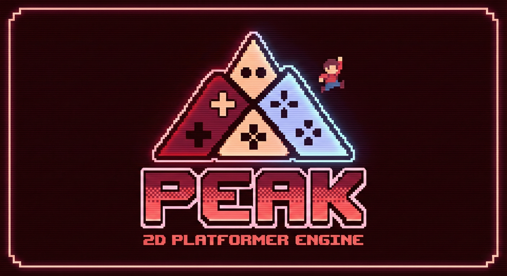

A deterministic, high-performance reinforcement learning benchmarking engine for evaluating deep RL agent adaptability in 2D platformer environments.
PEAK (Platformer Engine by Al & Kevin) is a research-grade RL benchmark engine built for Ontario Tech University's Master's Program under the supervision of Dr. Cristiano Politowski. It provides a complete toolkit — from visual level editor to live training dashboard to real-time debug overlays — for studying how deep RL agents learn, adapt, and generalize in physics-based platformer games. The engine ships with 6 reward personas, 4 neural network architectures, a batch-based curriculum system, 10+ progressive stages, and a multi-channel observation pipeline designed for Stable-Baselines3 PPO integration.
Study reward shaping, curriculum learning, and observation design with 6 personas that produce measurably different behaviors. Deterministic physics enable rigorous A/B experiments.
A thesis-ready platform: train agents, visualize decisions with debug overlays, compare algorithms, and export publication-quality data from the analytics dashboard.
Design levels in the visual editor, train agents to play them, and watch the results. The modular persona system makes behavior experimentation fast.
Use PEAK as a teaching tool for RL courses. Students can see agents learn in real-time with debug overlays, making abstract concepts like reward shaping tangible.
Test reward hypotheses rapidly. Six built-in personas demonstrate how different reward signals produce different emergent behaviors — then build your own.
Need a controlled, deterministic environment for comparing RL algorithms? PEAK's reproducible physics and standardized stages make it ideal for fair comparisons.
A continuous loop — design, test, train, analyze, iterate.
python menu.py
[9] paint tiles
[5] Play manually
[10] curriculum
[2] PPO + persona
Streamlit live
[6] single or [7] grid
Every tool ships built-in — level creation, debugging, training, analytics, and visualization.
PEAK uses Proximal Policy Optimization as its training algorithm, paired with four custom feature extractor architectures of varying capacity.
PPO clips the policy ratio to prevent destructive updates, making training stable across diverse reward landscapes. PEAK uses MultiInputPolicy to handle the Dict observation space (grids + scalars) — the CNN branch processes the 5-channel spatial grid while the MLP branch processes the 12 scalar features. Outputs are concatenated before the shared policy/value heads.
All architectures use GroupNorm (not BatchNorm — BatchNorm assumes i.i.d. mini-batches, which RL rollouts violate). The VecNormalize wrapper is configured with norm_obs_keys=["scalars"] so that binary grid observations are never corrupted by running statistics.
No channel split, single conv path. Fastest for hyperparameter sweeps and quick experiments.
Channel-split CNN — separate conv paths for terrain vs hazard channels. Recommended starting point.
SEBlock channel attention, 2-conv branches, 2-layer scalar MLP. Best accuracy-to-cost ratio.
Full deep semantic branch with SEBlock attention. Maximum capacity for complex levels.
Same architecture, same levels — wildly different emergent behaviors shaped by reward design.
| Persona | Primary Signal | Win | Death | Components | Emergent Behavior |
|---|---|---|---|---|---|
| Dijkstra | Potential-based pathfinding | +5.0 | −3.0 | potentialfrontierpatience | Follows optimal path, patient on platforms |
| Simple | Forward progress | +3.0 | −3.0 | progresscoinsalive | Steady rightward movement, baseline |
| Coin Hunter | Coin collection only | +3.0+c×0.15 | −3.0 | coinsalivekills | Thorough exploration, chases every coin |
| Enemy Hunter | Stomps (no goal gradient) | +3.0 | −2.0 | killspowerupalive | Aggressive, seeks enemies to stomp |
| Speedrunner | Velocity + time penalty | +8.0 | −3.0 | velocitypotentialtime | Maximum speed, ignores collectibles |
| Completionist | All objectives at parity | +5.0+c×0.1 | −3.0 | potentialcoinskillspatience | Versatile — grabs, stomps, progresses |
Best goal adherence. Moderate speed, low coins.
Fastest times. Minimal exploration. High death rate.
Highest coin rates. Slowest completions.
Most kills. Risky — often forgets the goal.
Most balanced. Jack of all trades.
A dual-stream perception system — spatial awareness plus global context — designed so no critical information is lost to either stream.
A 21×21 tile window centered on the player, encoded as 5 spatial channels. Never normalized by VecNormalize — fixing this was the single biggest performance unlock.
The Dijkstra channel is a continuous advantage map from a physics-aware flood-fill. Upward movement costs 3.5× horizontal (jumping is expensive), spikes add +18.0 penalty, platform tiles get proximity discounts. This gives the agent a "compass" that respects actual platformer physics.
Global context the grid can't capture. VecNormalize with norm_obs_keys=["scalars"].
Why two streams? The grid tells the agent what's nearby — spatial relationships between platforms, enemies, and hazards. The scalars tell the agent where it is globally — progress, velocity, time, power-up state. The CNN and MLP process these independently, then concatenate before the policy head.
PEAK is organized into system managers, game objects, and support scripts — each with a single responsibility.
Deterministic SMB1-style physics: gravity (1300), fast-fall (2500), acceleration-based movement, variable jump height. Handles moving platform detection, stall tracking, and ground collision resolution.
Dual hash grids: static tiles hashed once at load, dynamic entities rehashed per frame. Queries only touch occupied cells — O(C) cost. Level size doesn't matter.
Physics-aware flood-fill from goal tiles. Custom costs: horizontal=2.0, down=1.2, up=3.5, spike=+18.0. Platform proximity gets bonuses. Produces the observation channel and scalar distance.
The Gymnasium environment. Game loop, Dict observation construction, reward persona delegation, curriculum system (advance at 30%, fallback at ≤20%), soft/hard reset logic.
Parses ASCII .txt files into tile grids and entity spawn lists. YAML sidecars store per-level config: time limits, moving platform definitions, enemy parameters.
Renders 8 overlay layers (F1–F8) into the pygame viewport. Agent Vision card, reward trace graph, hitbox renderer, observation vector display — all independently toggleable.
PlayerStateMachine drives states (idle, running, jumping, falling). Acceleration-based movement with variable jump. Handles power-up states, lives, and respawn.
Patrol AI with edge detection. Stomped by player from above, kills player on side contact. Auto-registers into dynamic spatial hash.
Configurable start/end points, speed, width, height. Carries the player on contact. Detected by PhysicsManager for stall suppression.
Composition-based entities wrapping a unified GameObject. Auto-hash registration. Coins and QBlocks trigger reward signals; Spikes trigger death; Goal triggers level advance.
Hydra-configured training script. Builds environments, wires feature extractors, configures VecNormalize, sets up eval callbacks with VecNorm state saving alongside best_model.zip.
All 6 reward persona functions with ScoreTracker for delta computation. Factory pattern creates per-env tracker instances for safe parallel training.
Multi-model tiled viewer. Auto-discovers models, loads VecNorm stats, renders side-by-side with live labels and spider chart. Pause/resume/reset controls.
Streamlit dashboard auto-discovering CSV logs. Plotly charts for episode reward, win rate, curriculum stage. Multi-run comparison with smoothing.
Building PEAK required solving a chain of interconnected bugs — click each card to expand.
The most impactful bug: VecNormalize was normalizing all observation keys including binary grid channels, turning crisp 0/1 spatial data into noise. Fix: norm_obs_keys=["scalars"]. This single change was the biggest performance unlock in the entire project.
Mid-air or unvisited tiles returned sentinel -1.0. The reward function treated this as valid distance, computing deltas of -140 per step. Agents learned to never jump. Fix: validate Dijkstra readings before computing progress.
On level win, last_dijkstra kept its near-goal value (~0.05). First step of next level read ~0.9, producing reward of -42.5. Fix: reset distance anchors on win so both Dijkstra and Euclidean re-initialize cleanly.
BatchNorm assumes i.i.d. mini-batches — RL rollouts violate this. Statistics became unreliable with 3 parallel envs. Fix: replaced all BatchNorm2d with GroupNorm, which is batch-size agnostic.
A2C config had ent_coef=0.125, crushing the policy gradient under entropy regularization. The agent explored randomly forever. Fix: tuned to appropriate values per-algorithm with distinct YAML configs.
Stall detector penalized agents for no horizontal progress while riding platforms — even when riding was correct. Fix: added on_moving_platform flag to PhysicsManager and excluded platform-riding from stall calculations.
Trained agents tackle progressive stages with different reward personas.
Code & Sorcery Lab · Ontario Tech University
Reward persona engineering, observation pipeline, debug overlay system, Streamlit dashboard, training infrastructure, and agent performance analytics.
Core game engine, physics system, in-game feature implementation, MLP architecture research, level design, hyperparameter optimization, and experimental evaluation.
Built on Gymnasium, Stable-Baselines3, and Pygame.